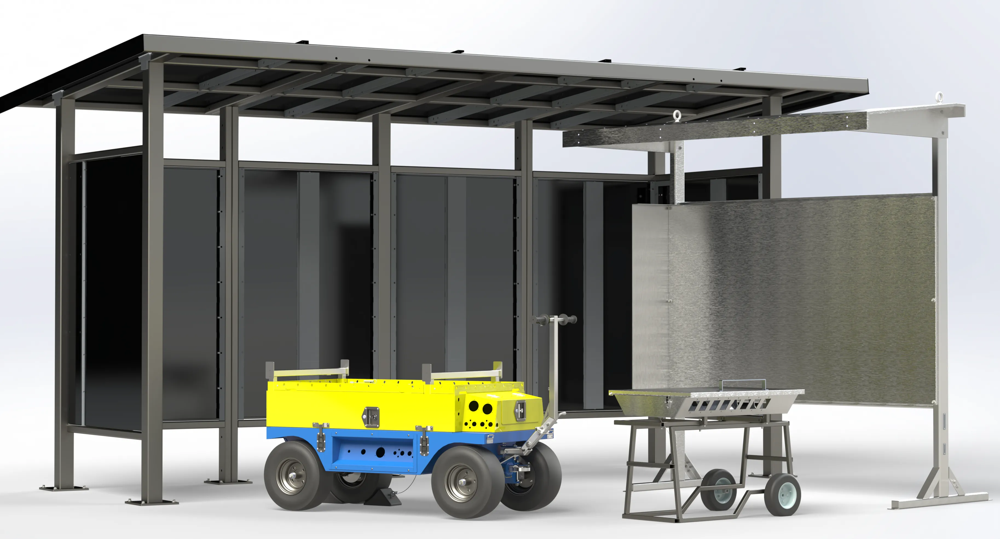
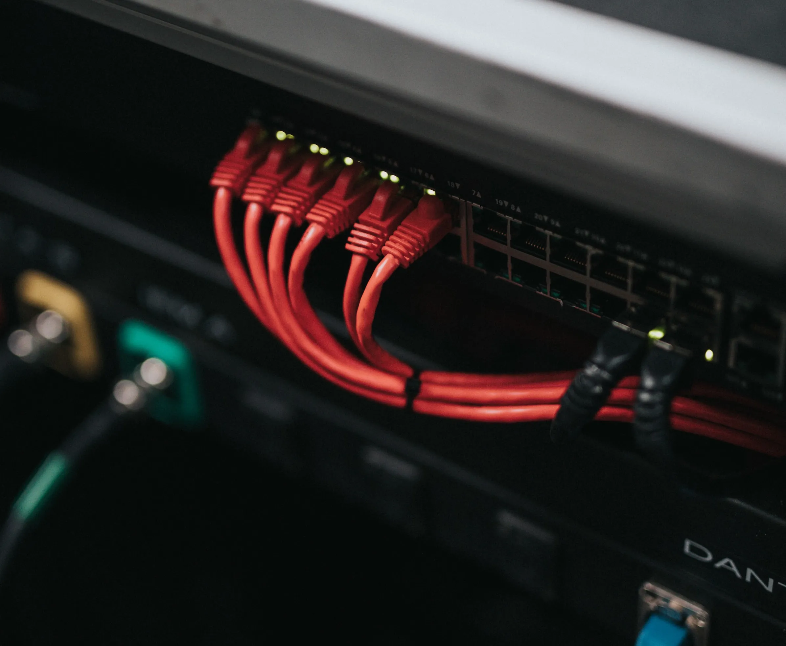
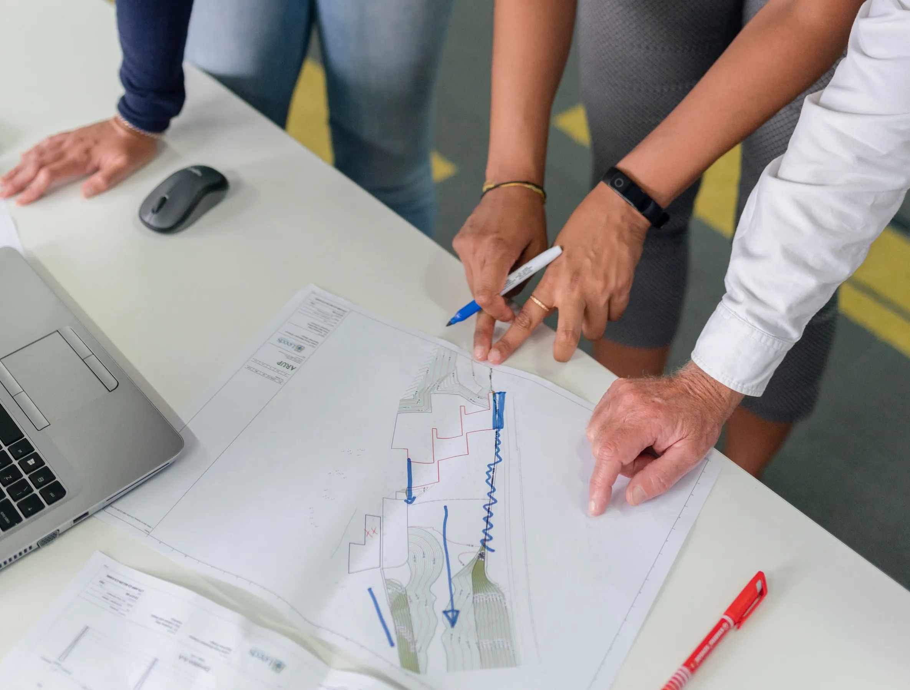

DESIGN
We design durable, modular and highly-customizable solutions for a more sustainable future.
At Sytec, we create excellence by delivering innovative, dependable and time-tested engineering solutions to clients across multiple industry sectors. Our expertise in rapid, revision-controlled custom metal design makes us excel at tackling specialized design challenges, optimize exisiting designs and implement smart, cost-reducing design changes.
ENCLOSURES
We manufacture custom stainless steel, steel, and aluminum enclosures to meet CSA/ UL Type 1, 12, 3R, 4, 4X standards. Our enclosures can be customized to be floor-stading, wall-mounted, or hole-mounted with additional features such as door kits, window kits,louvers and custom panels.

TUBE AND PIPE PRODUCTS
Explore our range of solutions featuring precision laser-cut pipe and tubing such as trailers carts, Category 5 wind-resistant shelters, enclosure shades to name a few. Engineered for both durability and adaptability, our products cater to your specific project needs.
CABLE MANAGEMENT
We specialize in making IT racks and cable management products for a wide range of end-use applications. We offer standard solutions for 19in EIA products ranging from 1U blanking panels to custom-made configurations
PRODUCT IMPROVEMENT & COST REDUCTION
Our team has extensive experience in evaluating and optimizing current product designs, focusing on developing standardized, modular, and reusable components, improve user experience and reduce production costs at scale.
